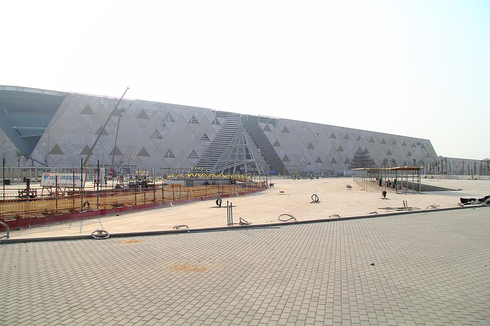

المتحف المصري الكبير أو (بالإنجليزية: GEM - Grand Egyptian Museum) يقع على بعد أميال قليلة من غرب القاهرة بالقرب من أهرام الجيزة. ويتم بناؤه ليكون أكبر متحف في العالم للآثار، ليستوعب 5 ملايين زائر سنويًا. بالإضافة لمباني الخدمات التجارية والترفيهية ومركز الترميم والحديقة المتحفية التي سيزرع بها الأشجار التي كانت معروفة عند المصري القديم. وقد أطلقت مصر حملة لتمويل المشروع الذي تقدر تكلفته بحوالي 550 مليون دولار، تساهم فيها اليابان بقيمة 300 مليون دولار كقرض ميسر، لكن أول محاولة لجمع المال اللازم لبناء هذا الصرح العملاق، تمثلت في المعرض الجديد للآثار المصرية في متحف الفنون في مدينة لوس أنجلوس بالولايات المتحدة الأمريكية، تحت شعار "توت عنخ أمون والعصر الذهبي الفرعوني". ومن المقرر أن يضم المتحف أكثر من 100,000 قطعة أثرية من العصور الفرعونية، واليونانية والرومانية، مما سيعطي دفعة كبيرة لقطاع السياحة في مصر.
تقع مباني المتحف على مساحة 100 ألف متر مربع، من ضمنها 45 ألف متر للعرض المتحفي، وتشمل المساحة المتبقية مكتبة متخصصة في علم المصريات، ومركزًا للمؤتمرات، ومركز أبحاث، ومعامل للترميم، وسينما ثلاثية الأبعاد، وأماكن مخصصة لخدمة الزائرين مثل المطاعم، ومحال بيع المستنسخات والهدايا، ومواقف انتظار السيارات.
يقع على مساحة 32 ألف متر، وهو موجود تحت مستوى سطح الأرض بـ10 أمتار تقريبًا، وتم إنشاء نفق ما بين مركز الترميم والمتحف يتم من خلاله نقل الآثار بشكل آمن بطوله 300 متر تقريباً. يضم مركز الترميم 19 معملًا يتم فيها ترميم مختلف أنواع الآثار وإعادتها لشكلها الطبيعي، منها: